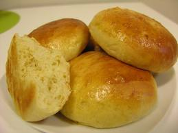

Welcome to Recetas De Bollos
Bollo casero: como hacer pan casero fácil y económico | Mira y Hazlo
2021.06.18 21:410 Inicio Blog Recetas Pasteleria Panaderia Tecnología Programación Redes Sociales Contacto Sobre nosotros Política de privacidad Inicio Blog Recetas Pasteleria Panaderia Tecnología Programación Redes Sociales Contacto Sobre nosotros Política de privacidad 0 Inicio Blog Recetas Pasteleria Panaderia Tecnología Programación Redes Sociales Contacto Sobre nosotros Política de privacidad 0 Mira y Hazlo Recipes Recetas Bollo casero: como hacer pan casero fácil y económico
Bollo casero: como hacer pan casero fácil y económico
Posted by Maribel 2 julio, 2020 Author Maribel Category Recetas Difficulty Intermediate Hoy te voy a enseñar como hacer bollos caseros ricos y facil. Qué mejor que preparar tu propio pan en tu casa para acompañar con mates, o llevar a la casa de tus familiares para compartir.
Hacer tu propio pan no lleva mucha ciencia es muy fácil de hacer y te vas a ahorrar mucho dinero. Sólo necesitas harina, levadura, grasa vacuna, sal, agua.
En un recipiente agregamos la levadura una cucharadita de azúcar y agua y lo dejas levar un rato o hasta que veas que se formó como una esponja. en un jarro agregar agua tibia y sal para preparar la salmuera. Luego en otro recipiente colocamos la harina le haces un hueco en el medio y agregamos la grasa y la esponja de levadura mezclamos un poco y luego de a poco vas agregando el agua hasta formar la masa.
2Amasar 10 minutos luego dejar reposar tapando la masa con un repasador hasta que la masa duplique su tamaño.
3
Después amasamos un poco más y cortamos pedazos de masa para formar los bollitos
4
Los estiramos con el palo de amasar hasta formar los bollos
5
Pre calentamos el horno a una temperatura 180 grados
Si lo haces en horno de barro procura que el horno no esté muy caliente o anda fijándote así no se arrebata.
Listo ya tenés pan para comer por varios días.
Lo podes guardar en la heladera para que te dure mas y vas sacando de a uno lo dejas un rato a fuera o lo caletas en la tostadora un rato.
Espero que este articulo te haya sido útil.
Productos que te pueden ser útiles
Ingredients
Cantidades: 2 kg Harina 300 g Grasa 50 g Levadura 3 g Azúcar (Una cucharadita) 30 kg Sal (15g / una cucharada sopera por cada kilo de harina) 500 ml Agua Tibia (Aprox. dependiendo como vallas integrando el agua en la harina)Directions
Preparación: 1En un recipiente agregamos la levadura una cucharadita de azúcar y agua y lo dejas levar un rato o hasta que veas que se formó como una esponja. en un jarro agregar agua tibia y sal para preparar la salmuera. Luego en otro recipiente colocamos la harina le haces un hueco en el medio y agregamos la grasa y la esponja de levadura mezclamos un poco y luego de a poco vas agregando el agua hasta formar la masa.
2Amasar 10 minutos luego dejar reposar tapando la masa con un repasador hasta que la masa duplique su tamaño.
3
Después amasamos un poco más y cortamos pedazos de masa para formar los bollitos
4
Los estiramos con el palo de amasar hasta formar los bollos
5
Pre calentamos el horno a una temperatura 180 grados
Si lo haces en horno de barro procura que el horno no esté muy caliente o anda fijándote así no se arrebata.
Listo ya tenés pan para comer por varios días.
Lo podes guardar en la heladera para que te dure mas y vas sacando de a uno lo dejas un rato a fuera o lo caletas en la tostadora un rato.
Espero que este articulo te haya sido útil.
© 2016–2019 Pixwell made with Love, powered by ThemeRuby.
